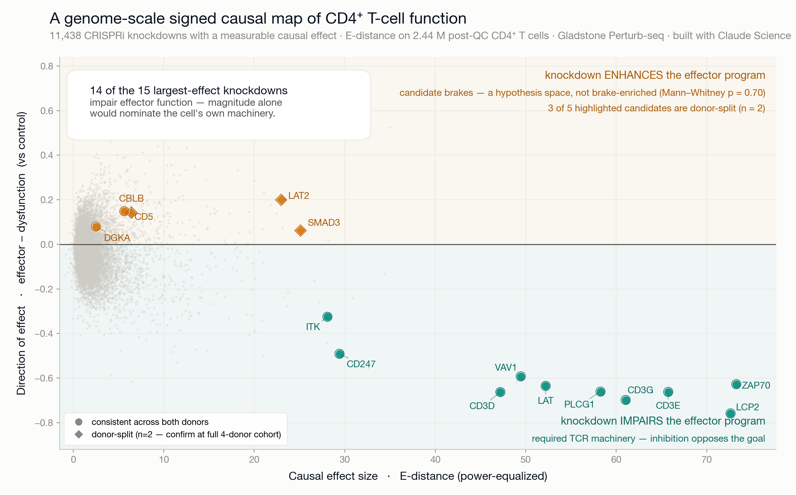

Drug-target discovery from a 2.64-million-cell CRISPRi Perturb-seq screen — built end-to-end with Claude Science.
Every gene, knocked down, in primary human CD4⁺ T cells. The drug targets are the brakes — but they hide among thousands of genes the cell simply needs to work.
Knockdown pushes cells away from the effector program. A large effect in the wrong direction — required, not druggable.
Knockdown pushes cells toward the effector program. Removing the gene enhances function — the therapeutic quadrant.
Axis 1 — power-equalized energy distance (causal magnitude). Axis 2 — a per-cell effector minus dysfunction score, over all 2.64 M cells.
ZAP70, CD3D/E/G, CD247, PLCG1, LAT, LCP2, VAV1, ITK — and the direction axis flags every one as machinery, donor-consistently. A map that gets the machinery right is one you can trust to point at the brakes.
